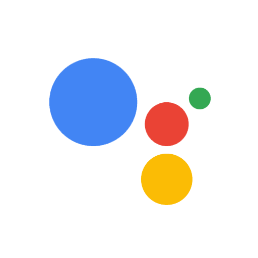

首頁
簡歷
Google 助理
Alexa
語音應用程式
執行原理
概略流程
1.使用者：輸入語音或文字 2.Google助理：傳遞輸入給Dialogflow 3.Dialogflow：透過預先訓練的模型分辨使用者意圖(Intent) 4.Dialogflow：將對應到的意圖與文字資訊傳遞給Fulfillment 5.Fulfillment：根據意圖返還相應的客製化回應 6.使用者：透過Google助理看見回應
Actions On Google
face
語音應用程式
face
物聯網(IOT)
Google助理的第三方開發者平台， 開發者可以開發語音應用程式、或者將Android APP介接到Google助理上讓使用者能以對話方式互動。 此外這個平台也支援IOT裝置的介接。 凡是支援Google助理的裝置都能呼叫語音應用程式。
open_in_new
了解更多

Dialogflow
face
自然語言處理(NLP)
face
機器學習(ML)
face
Node.js
它是一項在GCP上運行的Google服務。開發者可以訓練自己的機器學習模型，使對話機器人能分辨用戶的內容並將其對應正確回應。作為使用者，能以對話形式互動獲取資訊!不再需要透過才能關鍵字觸發回應。而且這項服務支援多個語言可以輕鬆擴展對話機器人的服務範圍!
open_in_new
了解更多
Firebase
face
Cloud Functions
face
實時資料庫(Real-time database)
它是一個行動和網路應用程式開發者平台。開發者能快速建立無伺服器的後端服務，亦可透過該平台提供的資料庫工具進行跨裝置即時資料同步，在對話機器人的應用上可以作為處理回應的終端。
open_in_new
了解更多
查看作品集
圖片來自
shutterstock